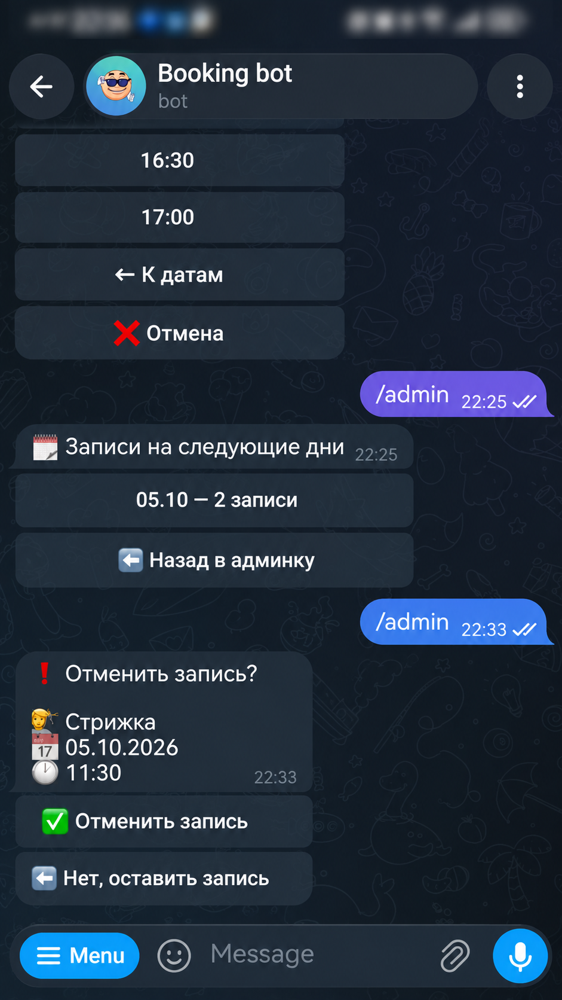
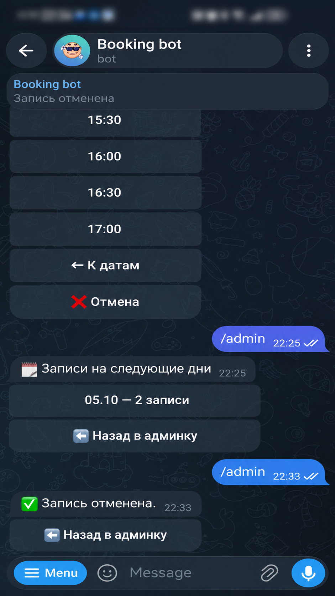
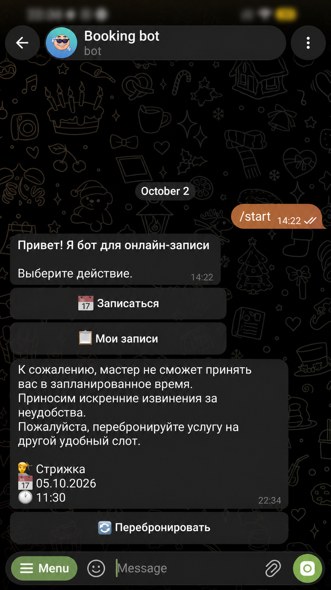

Клиентам удобно записываться
Telegram или Instagram Direct — клиент выбирает привычный канал и записывается самостоятельно.
Для мастеров и специалистов
Booking Bot принимает записи через Telegram и Instagram Direct. Клиент сам выбирает услугу и время, а вы управляете общим расписанием в Telegram.
Откройте работающего бота и пройдите путь клиента.


Два канала. Один результат — подтверждённая запись.
Больше времени на работу
От первого сообщения клиента до управления рабочим днём — Booking Bot помогает держать всё в одном процессе.
Telegram или Instagram Direct — клиент выбирает привычный канал и записывается самостоятельно.
Одно время не займут два клиента. Расписание защищено и при одновременных попытках записи.
Записи из разных каналов собраны вместе. Вам не нужно вручную переносить их из переписок.
Настраивайте рабочие часы, выходные и перерывы. Меняйте расписание на конкретные даты.
Реальный сценарий записи
Клиент выбирает услугу, свободное время и оставляет телефон. Booking Bot подтверждает запись прямо в привычном мессенджере.
Услуга Дата Время Телефон Подтверждение
Три этапа полного сценария записи.


Тот же сценарий в другом мессенджере.


Нажмите на скриншот, чтобы рассмотреть детали.
Центр управления мастера
Основные действия собраны в Telegram. Откройте нужный раздел и управляйте рабочим днём без переключения между системами.

Управление записями
Смотрите записи из обоих каналов в одном списке. Если планы меняются, отмените запись — Booking Bot сообщит об этом клиенту там, где он записывался.
Записи из Telegram и Instagram Direct в одном рабочем списке.

Вы подтверждаете отмену, чтобы случайно не изменить запись.

Отмена отражается в расписании, а время освобождается для новой записи.

Клиент получает уведомление в своём канале и может сразу записаться снова.

Спокойствие за расписание
Даже если несколько клиентов одновременно выбирают одно время, Booking Bot защищает расписание от двойных записей.
Клиент получает подтверждение только на доступный интервал.
Запись из Telegram занимает время и для клиентов из Instagram Direct. Вам не нужно сверять их вручную.
Под капотом
Ключевые технические решения, которые обеспечивают надёжность, целостность данных и работу Booking Bot в нескольких каналах.
Telegram, Instagram Direct и админский интерфейс используют одну бизнес-логику. Адаптеры принимают запросы и показывают результат, правила остаются в ядре.
Проверка слота, блокировка мастера через SELECT FOR UPDATE и GiST exclusion constraint работают вместе. Конкурентные операции сериализуются; PostgreSQL запрещает пересечение подтверждённых записей.
Повторная проверка слота выполняется под блокировкой мастера.
session_manager управляет границами транзакций. Репозитории изолируют работу с данными и не выполняют commit. Внешние сетевые запросы вынесены за пределы критической транзакции и блокировки.
Обычный недельный график, изменения на конкретные даты, выходные и недельные или разовые перерывы. ScheduleService определяет фактическую доступность для всех каналов.
Идентификаторы Telegram и Instagram изолированы: введённый телефон не объединяет аккаунты. Запись сохраняет исходную идентичность клиента, и уведомления возвращаются в его канал записи.
До 2 активных будущих записей на клиента, горизонт по умолчанию — 90 дней. Блокировка клиента защищает проверку лимита при конкурентных запросах. Самостоятельная отмена доступна не позднее чем за 2 часа до записи.
Блокировка клиента → подсчёт записей → создание записи.
Основные сценарии, ограничения и конфликтные состояния покрыты автотестами.
Попробуйте Booking Bot
Откройте бота в удобном канале: выберите услугу, время и пройдите запись до подтверждения.